Second worker: setup, join and networking tests¶
Updated 2026-10-15 (Africa/Nairobi). This records the personal lab build from user-supplied screenshots and reports. Setup commands are historical; do not recreate an existing VM or rejoin an already registered node.
Verified milestone¶
All three nodes are Ready: lab-control-01 (192.168.200.10), lab-worker-01 (192.168.200.11), and lab-worker-02 (192.168.200.12). All report Kubernetes 1.36.5 and CRI-O 1.36.7. Both workers run kernel 5.14.0-687.58.1.el9_8.x86_64; the control plane still reports 687.57.1. Calico is Available, not Progressing or Degraded. CoreDNS remains ready.
Before creating worker 02, the existing two-node cluster recovered after laptop shutdown. Worker 01's kubelet, CRI-O and chrony were enabled and active, swap remained off and its default and Calico routes were present. This closes the earlier worker-01 boot-enablement evidence gap. Worker 02 has not yet undergone a separately verified post-join reboot.
Create and install worker 02¶
The VM uses the same creation procedure as the first worker, with these settings:
| Setting | Value |
|---|---|
| VM and hostname | lab-worker-02 |
| Firmware | Generation 2; MicrosoftUEFICertificateAuthority Secure Boot template instructed |
| Resources | Fixed 5120 MiB RAM, 2 virtual CPUs, new 40 GB expanding VHDX |
| VM directory | C:\Users\USER\HyperV\data-platform-lab\lab-worker-02 |
| Switch | reservoir-lab-switch |
| Installation media | RHEL 9.8 x86_64 DVD ISO |
| Guest settings | Server without GUI, Africa/Nairobi, administrator sabare |
| Address | 192.168.200.12/24; gateway 192.168.200.1 |
| DNS | 1.1.1.1 and 8.8.8.8 |
Installation completion was user-confirmed. ISO detachment and disk-first boot were instructed; installed-system boot is evidenced, but DVD ejection has no separate verification capture. The disk layout shows 600 MiB EFI, 1 GiB XFS boot and LVM root (34.4 GiB) plus 4 GiB swap. Guest usable RAM is about 4.5 GiB.
Repair the persistent Ethernet profile¶
First boot and later diagnostics showed eth0 UP without an IPv4 address, no routes and only loopback active in NetworkManager. HTTPS succeeded at an intermediate point, but that did not prove configuration persistence. The cause of the disappearing configuration is unknown. The failed profile lookup was not fixed by correcting command typos because no Ethernet profile was active.
From the Hyper-V guest console, create or reuse a named profile:
if ! nmcli connection show "lab-worker-02-eth0" >/dev/null 2>&1; then
sudo nmcli connection add type ethernet con-name "lab-worker-02-eth0" ifname eth0 connection.autoconnect no
fi
sudo nmcli connection modify "lab-worker-02-eth0" connection.interface-name eth0 connection.autoconnect yes connection.autoconnect-priority 100 ipv4.method manual ipv4.addresses "192.168.200.12/24" ipv4.gateway "192.168.200.1" ipv4.dns "1.1.1.1 8.8.8.8" ipv4.ignore-auto-dns yes ipv4.never-default no
sudo nmcli connection up "lab-worker-02-eth0"
ip -br address
ip -4 route
nmcli connection show --active
An earlier multiline entry omitted separating whitespace and joined the gateway value to the next option. The corrected command activated successfully. The user confirmed reboot persistence, and the later post-upgrade capture independently shows the intended address, gateway and profile.
SSH, registration and updates¶
SSHD and chronyd were enabled and started. SSH host-fingerprint comparison was
instructed, and administration continued through SSH. Time synchronisation was
verified. Interactive Red Hat registration succeeded; BaseOS and AppStream were
enabled and dnf makecache --refresh completed. The registration capture is
excluded because it contains account/system identifiers, and the HTTPS capture
is excluded because it contains cookies.
sudo dnf upgrade --refresh finished with Complete. After reboot, uname -r
reported 5.14.0-687.58.1.el9_8.x86_64; SSH and chrony were enabled/active and
networking persisted.
Kubernetes prerequisites and packages¶
The worker followed the node preparation guide and the same runtime setup as worker 01:
- Backed up fstab, disabled swap, commented its boot entry, validated with
findmnt --verify --verboseand reloaded systemd. Swap stayed 0B after reboot. - Persisted and loaded overlay, br_netfilter and vxlan modules.
- Persisted IPv4 forwarding and both bridge netfilter sysctls at 1.
- Excluded Calico interfaces from NetworkManager. Ethernet remained connected.
- Verified SELinux Enforcing and cgroup2fs. Firewalld backup and disablement were instructed to match the chosen Calico setup. The supplied prerequisite screenshot shows its earlier active state; no later disabled-state capture is available. Calico host protection policies have not been configured.
- Installed CRI-O from the stable v1.36 RPM repository with container-selinux; installed Kubernetes 1.36.5 packages and cri-tools. Both CRI-O and kubelet were enabled at boot. Package installation and initial RuntimeReady were reported.
The post-prerequisite reboot capture verifies swap, modules and sysctls persisted. The later cluster capture verifies the actual worker Kubernetes/CRI-O versions.
Generate on the control plane, execute on the worker¶
Generating a join command does not execute it. This distinction caused an initial NotFound result: worker 02 was absent, kubelet inactive and its config files missing. No reset was required.
On lab-control-01:
sudo kubeadm token create --ttl 1h --print-join-command |
sed 's/^kubeadm /sudo kubeadm /; s|$| --cri-socket unix:///var/run/crio/crio.sock --node-name lab-worker-02|'
Copy the complete output line and run it on lab-worker-02. Do not publish the generated token or include angle-bracket placeholders. Join then reported a healthy kubelet, TLS bootstrap and successful cluster registration.
Warnings about hostname resolution, the vendor kernel's upstream LTS classification and kube-proxy bindAddress did not block the join. They are not claimed resolved. The token-bearing screenshots are excluded from publication.
On the control plane, verification used:
kubectl wait --for=condition=Ready node/lab-control-01 node/lab-worker-01 node/lab-worker-02 --timeout=300s
kubectl get nodes -o wide
kubectl get pods -A -o wide --field-selector spec.nodeName=lab-worker-02
kubectl get tigerastatus
Worker 02 transitioned from NotReady to Ready. Its calico-node, CSI driver and kube-proxy Pods were ready, and Calico was available. On worker 02, kubelet and CRI-O were enabled/active, RuntimeReady and NetworkReady were true, and swap remained off. This proves current readiness, not post-join reboot recovery.
Worker-to-worker tests¶
Run the following on lab-control-01. Each test Pod runs on a specified worker; the unique test-node label makes the Service target only worker 02.
kubectl create namespace worker-network-check
for node in lab-worker-01 lab-worker-02; do
cat <<EOF | kubectl apply -f -
apiVersion: v1
kind: Pod
metadata:
name: net-${node}
namespace: worker-network-check
labels:
app: worker-network-check
test-node: ${node}
spec:
nodeSelector:
kubernetes.io/hostname: ${node}
automountServiceAccountToken: false
containers:
- name: web
image: docker.io/library/busybox:1.37.0
command: ["/bin/sh", "-c"]
args:
- mkdir -p /www; hostname > /www/index.html; exec httpd -f -p 8080 -h /www
readinessProbe:
httpGet:
path: /
port: 8080
resources:
requests:
cpu: 10m
memory: 16Mi
limits:
cpu: 100m
memory: 64Mi
EOF
done
kubectl wait -n worker-network-check --for=condition=Ready pod -l app=worker-network-check --timeout=300s
kubectl get pods -n worker-network-check -o wide
Stop and inspect Pod events if readiness times out. Once ready, test both paths:
WORKER1_IP=$(kubectl get pod net-lab-worker-01 -n worker-network-check -o jsonpath='{.status.podIP}')
WORKER2_IP=$(kubectl get pod net-lab-worker-02 -n worker-network-check -o jsonpath='{.status.podIP}')
kubectl exec -n worker-network-check net-lab-worker-01 -- wget -T 10 -qO- "http://${WORKER2_IP}:8080"
kubectl exec -n worker-network-check net-lab-worker-02 -- wget -T 10 -qO- "http://${WORKER1_IP}:8080"
for pod in net-lab-worker-01 net-lab-worker-02; do
kubectl exec -n worker-network-check "$pod" -- nslookup kubernetes.default.svc.cluster.local
kubectl exec -n worker-network-check "$pod" -- nslookup www.redhat.com
done
kubectl expose pod net-lab-worker-02 -n worker-network-check --name=worker2-web --port=8080 --target-port=8080 --selector=test-node=lab-worker-02
kubectl get endpointslices -n worker-network-check -l kubernetes.io/service-name=worker2-web -o wide
kubectl exec -n worker-network-check net-lab-worker-01 -- wget -T 10 -qO- http://worker2-web.worker-network-check.svc.cluster.local:8080
Expected direct HTTP responses are net-lab-worker-02 followed by net-lab-worker-01. The user confirmed both directions passed. The final supplied capture shows DNS responses and a worker-02-only Service endpoint at 10.244.18.66; the Service request from worker 01 returned net-lab-worker-02. CoreDNS at 10.96.0.10 resolved the Kubernetes API Service to 10.96.0.1 and external Red Hat names to public addresses. Internal/external DNS on both test Pods passed by user report; not every lookup is visible in the final screenshot.
After all tests passed:
kubectl delete namespace worker-network-check
kubectl get nodes -o wide
kubectl get tigerastatus
The user confirmed namespace deletion and all three nodes still Ready. Those final cleanup commands are not visible in the last capture. Tests verify Pod HTTP, DNS and Service routing, not NetworkPolicy isolation or performance.
Screenshots and evidence¶
Two-node reboot recovery¶
Both nodes Ready and Calico available after laptop shutdown.
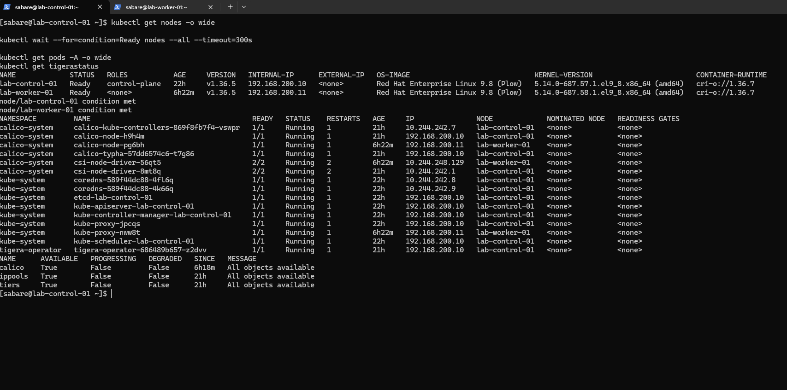
Worker 01 boot services¶
kubelet, CRI-O and chrony enabled/active, no swap and VXLAN route.
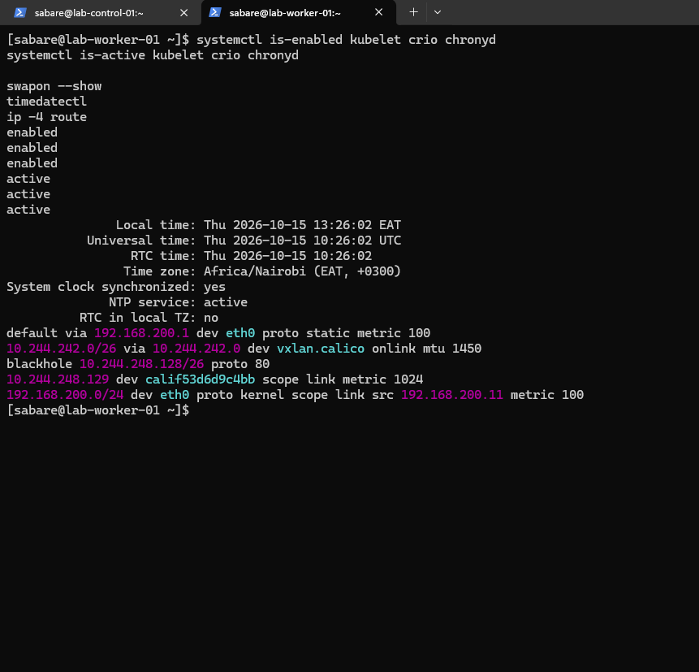
Worker 02 VM configuration¶
Generation 2, two CPUs, fixed 5120 MiB, switch and ISO.
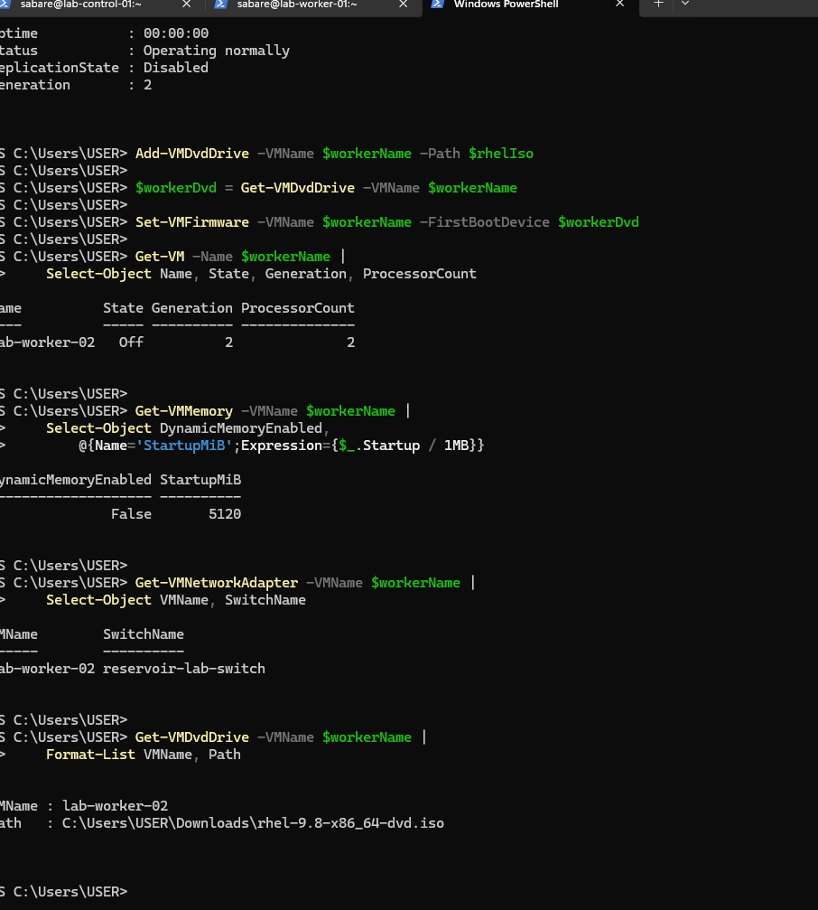
Worker 02 first boot¶
RHEL 9.8, hostname, RAM, 40 GB disk and sudo; initial Ethernet address absent.
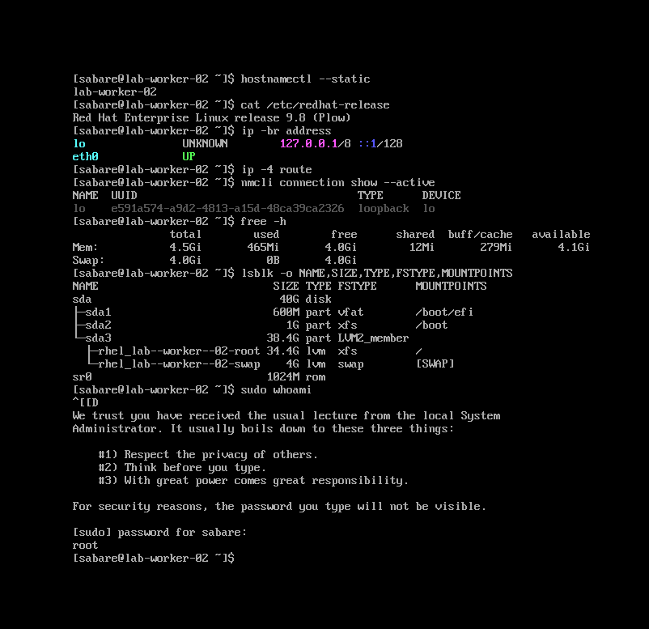
Inactive worker network¶
No address or routes; only loopback active; profile lookup failed.
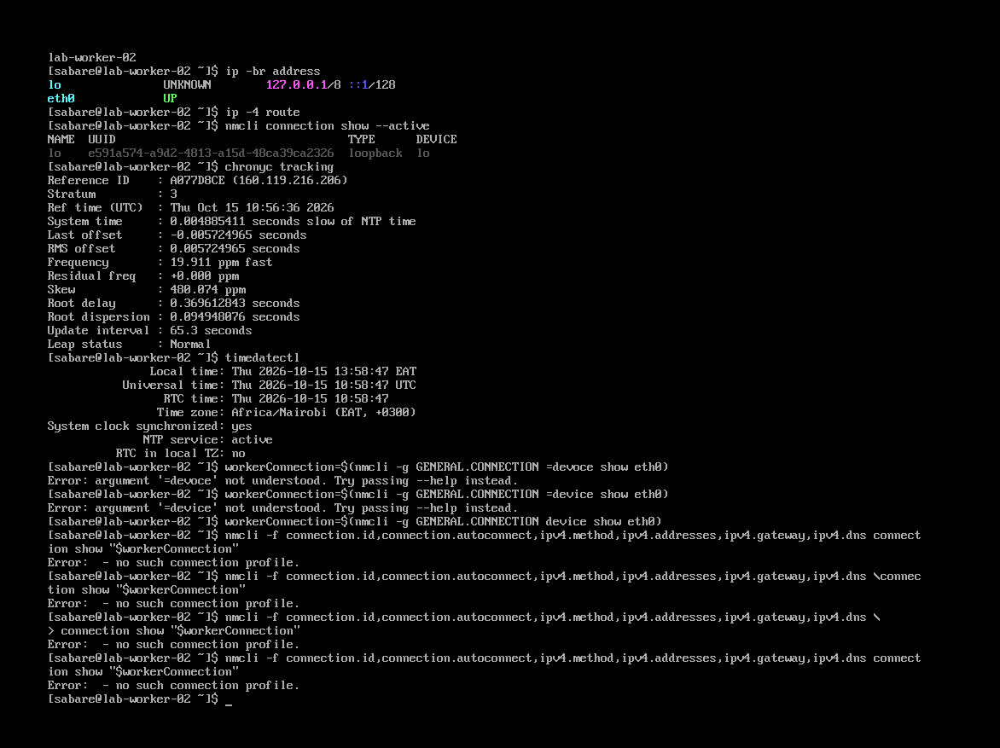
Worker network repaired¶
Corrected profile activates at 192.168.200.12 with default route.
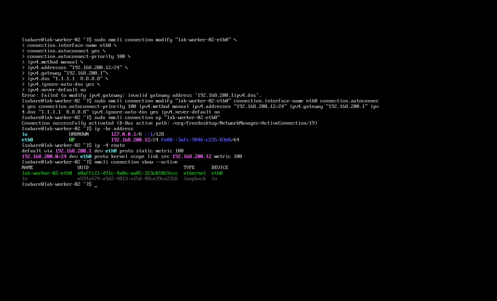
Worker upgrade complete¶
DNF Complete and kernel 5.14.0-687.58.1 installed.
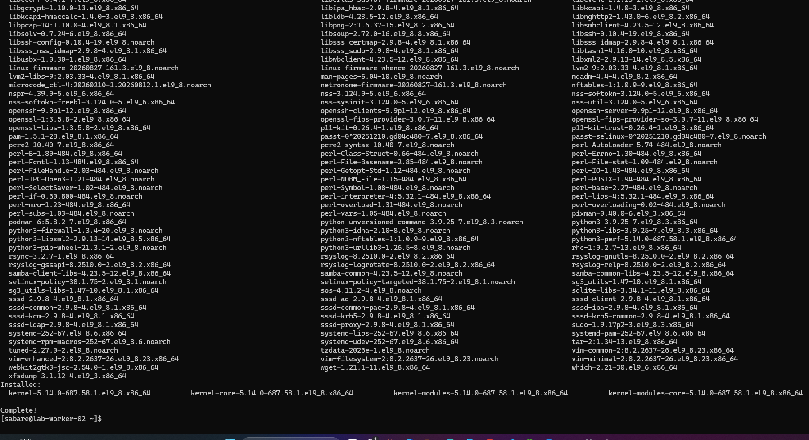
Worker post-upgrade checks¶
Updated kernel running, network retained and clock synchronised; swap still active historically.
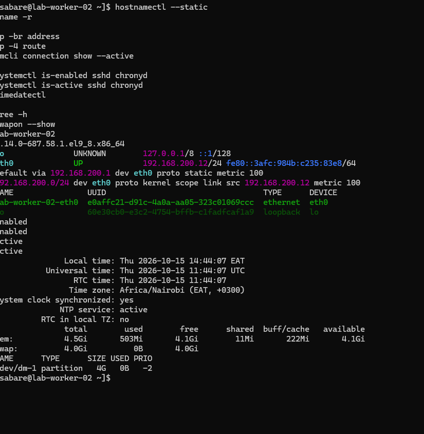
Swap and network preparation¶
fstab validation passed; modules, sysctls and NetworkManager exclusions configured.
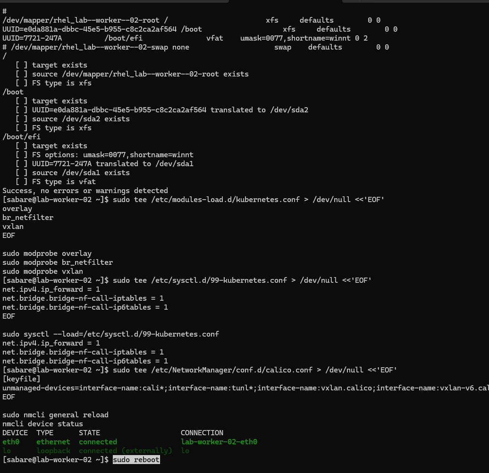
Prerequisites after reboot¶
Swap 0B, modules present, sysctls 1, SELinux Enforcing and cgroup v2; firewalld active before later setup.
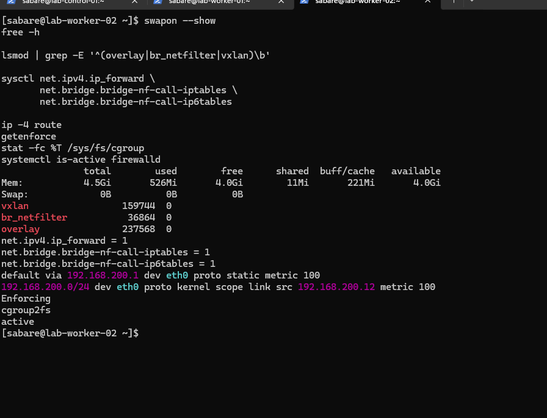
Three-node cluster ready¶
Worker 02 transitions to Ready; Calico available; runtime and network ready, services enabled/active.
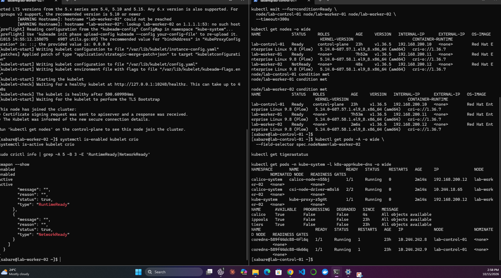
Worker-to-worker DNS and Service¶
DNS answers, worker-02-only endpoint 10.244.18.66 and HTTP response net-lab-worker-02.
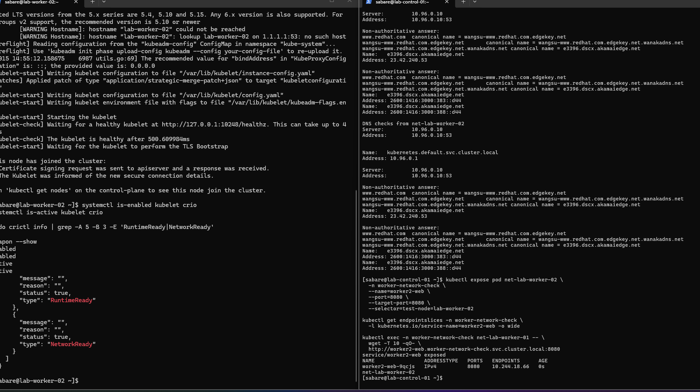
Next milestone¶
Verify worker 02 recovers after a post-join reboot, then prepare the supporting GitHub Actions runner and local registry VM. Application workloads and network isolation policies remain future work.